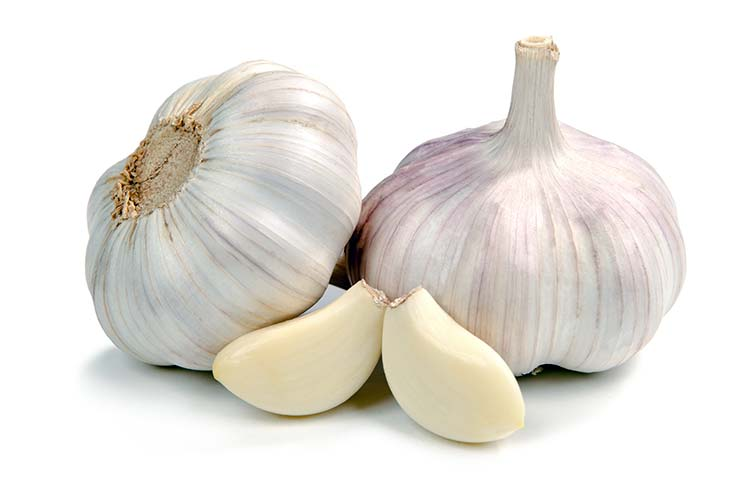
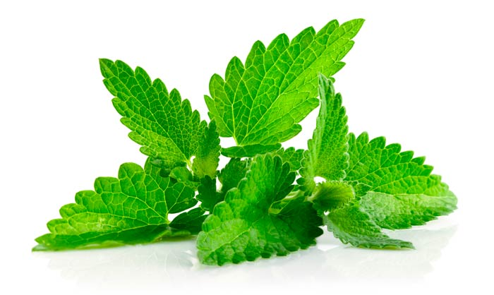
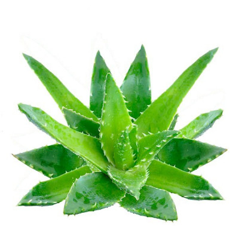

Дізнайтеся більше про корисні властивості рослин та їх використання в медицині.
Часник використовується як природний антибіотик і має багато корисних властивостей.
Додайте його до своєї дієти для підтримки імунітету та зменшення ризику захворювань.
М'ята допомагає при розладах шлунку та може використовуватися для зняття головного болю.
Спробуйте чай з м'яти для заспокоєння травматичних відчуттів та полегшення стресу.
М'ята є однією з найдоступніших лікарських рослин.
Алое Вера використовується для заспокоєння шкіри та лікування опіків.
Вирощуйте алое вдома для доступу до природних засобів для догляду за шкірою.
